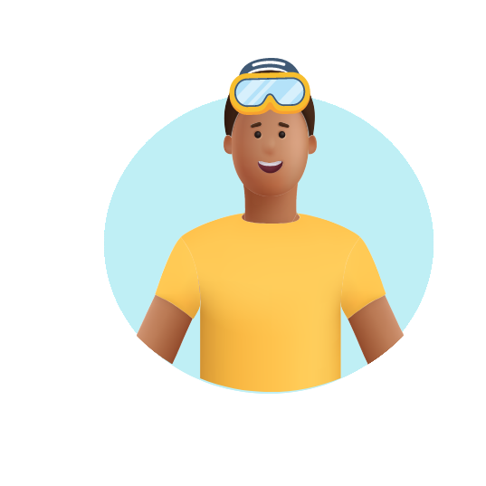
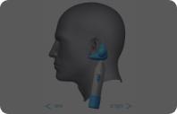

-
אני שוחה
שוחה הרבה? נמליץ לך ללמוד להשתמש באירדוק, מכשיר שעוזר בניקוז נוזלים באוזניים. במשך השחייה, מים עלולים לחדור לאוזניים ולגרום לזיהום ולדלקת. האירדוק יכול להקל על בעיית הנוזלים שלך.
- 
-

-
Swimmer’s ear
תופעה נפוצה בעיקר אצל שחיינים ושחייניות. במשך השחייה חודרים לאוזניים נוזלים שעלולים להיות מזוהמים ודלקתיים, אשר גורמים להרגשה של אי נוחות. מומלץ להשתמש באירדוק אחרי השחייה. המכשיר ינקז את הנוזלים ויגרום לתחושת הקלה.
כיצד האירדוק משפיע על האוזן?
כשהגלים מתחזקים, האירדוק מתגלה...
לחיצה על כל אייקון תחשוף מידע על החלק באוזן.
אבל איך הוא עובד? לחצו על הכפתור כדי לגלות...
למה דווקא אירדוק?
קומפקטי
עיצובו הארגונומי של האירדוק הופך אותו למוצר קל לשימוש ולנשיאה בכל מקום. גודלו הקטן מאפשר לקחת אותו בתיק, כך שתוכלו להקל על כאבי אוזניים ישר אחרי השחייה.

פתרון טבעי
האירדוק מציע פתרון נוח ונטול כאבים להקלת כאבי אוזניים, ללא צורך במרשם רופא. בניגוד לאנטיביוטיקה, הטיפול אינו פולשני ואינו גורם לתופעות לוואי.

יעילות מוכחת
מחקר שנעשה על מכשיר האירדוק מצביע על כך שמכשיר האירדוק יעיל בהקלת תסמיני ״אוזן שחיין״ באוזניים, כגון תחושת מלאות באוזניים הנגרמת מהצטברות נוזלים לאחר שחייה. לקריאה נוספת לחצו כאן.
נא להכיר: מכשיר האירדוק
לחיצה על כל אייקון תחשוף הסבר על אותו חלק, ואפשר להזיז את הסליידר כדי לסובב את המכשיר.

איך לתפעל את האירדוק צעד אחר צעד
